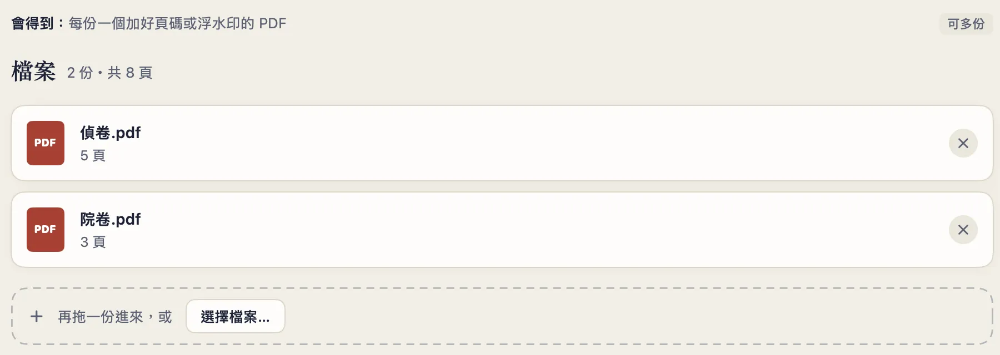
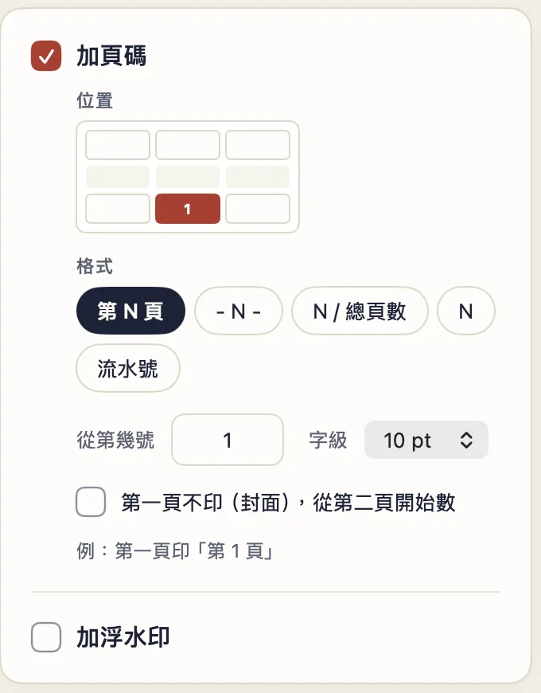
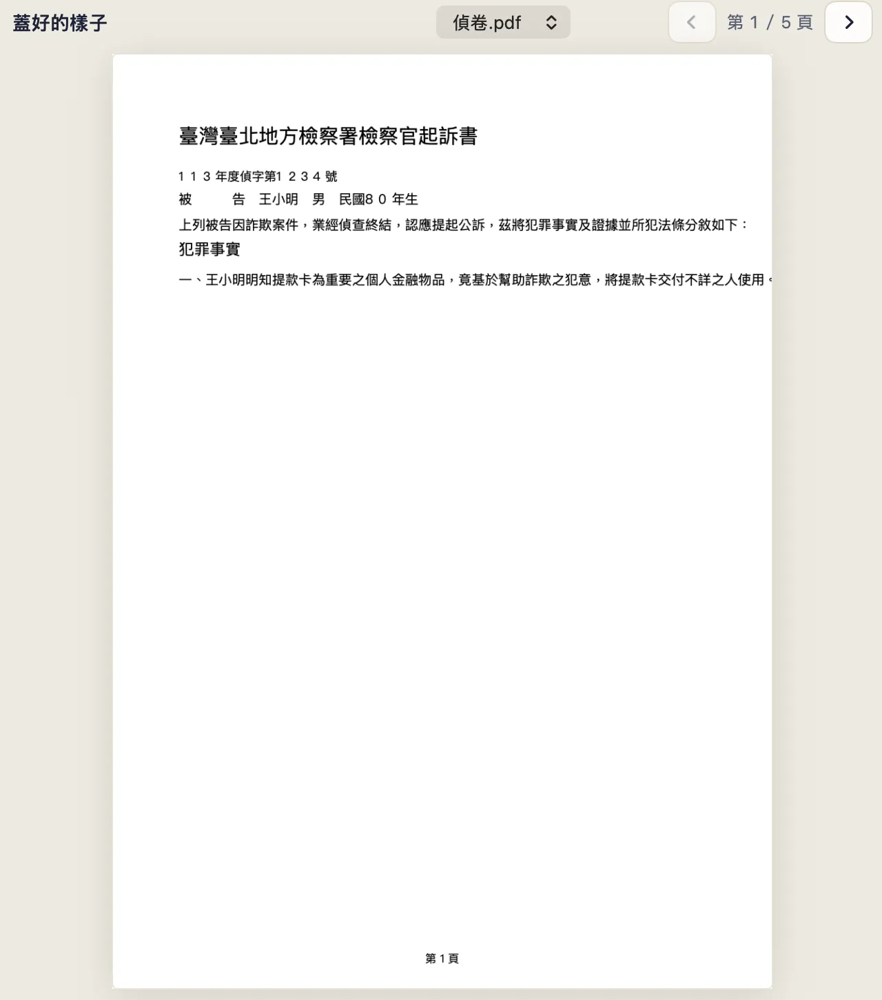
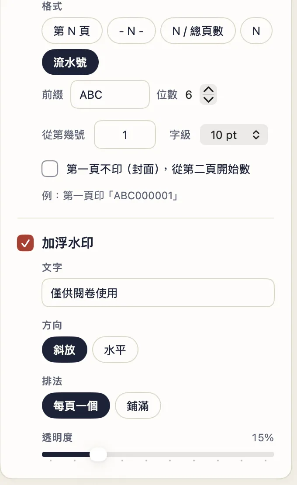
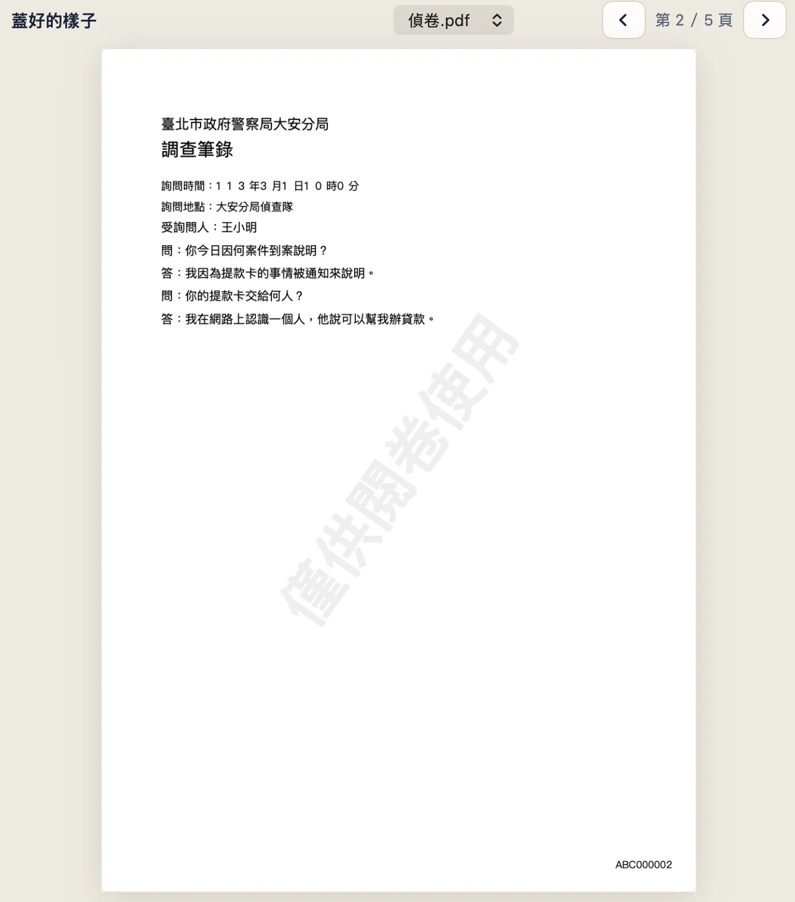
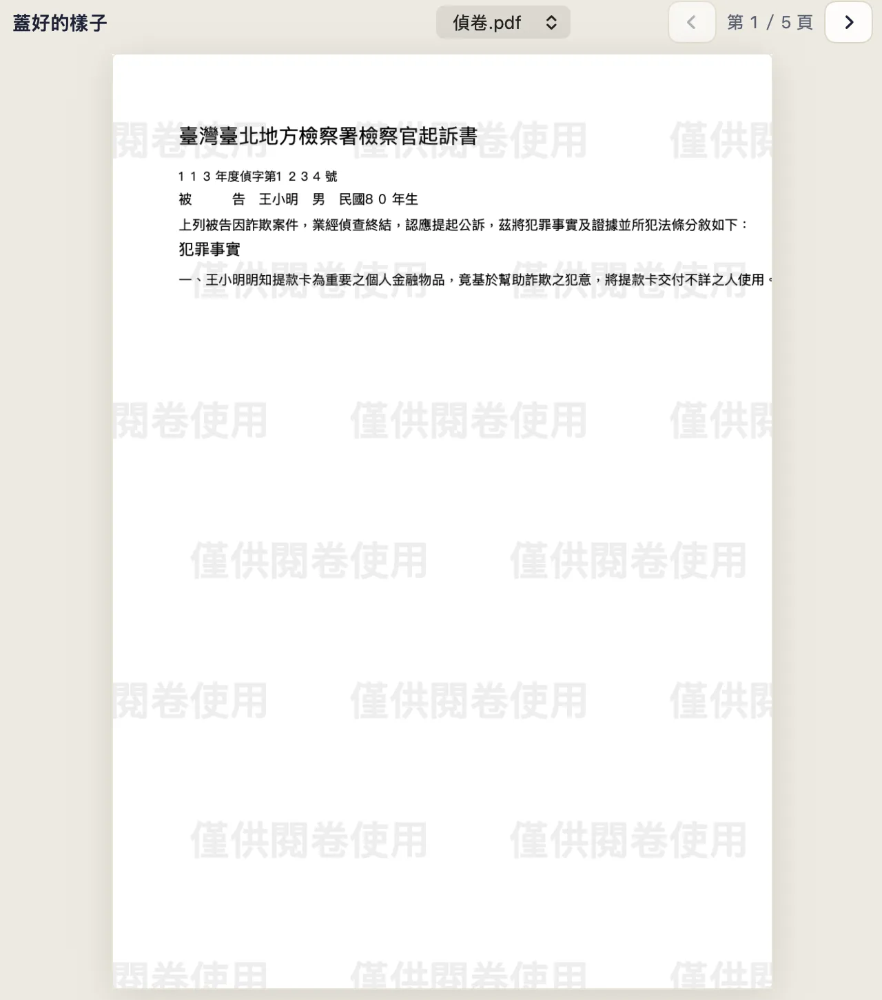
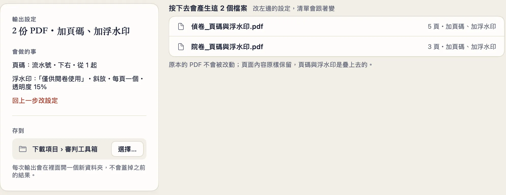

替 PDF 每一頁加頁碼、流水號或浮水印：頁碼與浮水印教學
卷證影本、書狀附件常常需要編頁碼，或標上「僅供閱卷使用」。「頁碼與浮水印」一次處理好幾份 PDF，改設定時右邊直接顯示蓋好的樣子，原本的頁面內容不會被重畫。
這個工具做什麼
「頁碼與浮水印」在首頁的「遞狀與交付」那一組（沒有數字捷徑，Mac 從側邊欄或選單列點）。流程是：放入 PDF › 設定與預覽 › 輸出。
- 頁碼與浮水印各有一個開關，可以只用一個，也可以同時用。
- 頁碼和浮水印是疊在原頁上面的一層。原本的頁面內容不會被重畫，原本的文字一樣可以搜尋、複製。
- 可以一次放好幾份，每份各自輸出一個 PDF。原本的 PDF 不會被改動。
示範用合成的「偵卷.pdf」（5 頁）與「院卷.pdf」（3 頁）。
第一步：放入 PDF
點「頁碼與浮水印」，把 PDF 拖進來，或按「選擇檔案…」。

有開啟密碼的檔案，放進來時會問密碼。按右上角的「下一步：設定與預覽」。
第二步之一：頁碼
左邊是設定，右邊「蓋好的樣子」是 App 實際蓋一份後顯示出來的，跟輸出的結果相同。改左邊任何一項，右邊馬上換成新的樣子。
頁碼的設定

蓋好的樣子

「加頁碼」預設勾著，下面的選項：
- 位置：上下各三格（左、中、右），點一格就換位置。
- 格式：「第 N 頁」「- N -」「N / 總頁數」「N」，或「流水號」。
- 從第幾號：第一個印出的號碼。例如這份接在別份後面，從 31 開始。
- 字級：8 到 14 pt，預設 10 pt。
- 第一頁不印（封面），從第二頁開始數：勾了以後，第一頁不印，第二頁印第一個號碼。
選項下面一行寫著「例：第一頁印「第 1 頁」」，可以先確認號碼對不對。
放了好幾份時，右邊上方有選單可以換一份看；箭頭換頁。
流水號
格式選「流水號」時，多出「前綴」與「位數」兩格。前綴預設「ABC」、位數 6，第一頁印「ABC000001」。前綴可以改成案號簡稱或自己的代號，位數是號碼補零到幾位（1 到 10）。
流水號與浮水印的設定

第 2 頁蓋好的樣子

放了好幾份時，每一份都從「從第幾號」開始編，不會接續上一份。要整批連續編號，先用「頁面整理」合併成一份，或每份分開輸出、各自填起始號碼。
第二步之二：浮水印
勾「加浮水印」，下面的選項：
- 文字：預設「僅供閱卷使用」，可以改成其他字。空白時不能輸出。
- 方向：「斜放」或「水平」。
- 排法：「每頁一個」放在頁面中間，「鋪滿」整頁重複排滿（字會小一點）。
- 透明度：5% 到 50%，預設 15%。數字越大越深，也越容易蓋住下面的字。

只要浮水印、不要頁碼時，把「加頁碼」取消勾選。兩個都取消時，會提醒「頁碼或浮水印至少打開一個」，不能往下。
確認後按「下一步：輸出」。
第三步：輸出
左邊「會做的事」寫出頁碼與浮水印的設定，要改就按「回上一步改設定」。右邊列出每一份會產生的檔案與頁數。

檔名是原檔名加上「_頁碼」「_浮水印」或「_頁碼與浮水印」。按右上角的「開始輸出 N 個檔案」。
檔案存在「下載項目 › 審判工具箱」底下新開的資料夾，也可以在輸出前用「存到 › 選擇…」換位置。
在 iPhone・iPad 上
選項相同。iPhone 上「蓋好的樣子」在上、設定在下，按鈕在畫面下方，輸出的檔案在「檔案」App 的「我的 iPhone › 審判工具箱」。細節在在 iPhone・iPad 上使用那篇。
做不到的事／要注意
- 頁碼沒有底色，原頁同一個位置已經有字（例如法院蓋的頁碼）時會疊在一起。請在預覽翻幾頁看，必要時換位置。
- 頁碼與浮水印的文字可以被搜尋、複製出來。之後再用「PDF 轉 Markdown」等工具處理這份檔案時，文字裡也會出現頁碼與浮水印的字。
- 浮水印是疊上去的一層，可以用 PDF 編輯軟體拿掉，不能當作防止複製或外流的保護。
- 顏色、字型不能改；只能加文字浮水印，不能加圖片。
- 「N / 總頁數」的總數是最後一頁印的號碼；從第幾號不是 1 時，它不等於頁數。
- 原檔有開啟密碼時，輸出的檔案沒有密碼。需要的話，用密碼工具再加上。
常見問題
加了頁碼，原本的文字還能搜尋嗎？
可以。頁碼與浮水印是疊在原頁上的一層，原本的頁面內容不會被重畫，文字一樣可以搜尋、複製。
好幾份一起處理，流水號會接續嗎？
不會。每一份都從「從第幾號」開始編。要連續編號，先用「頁面整理」合併成一份，或每份分開輸出並各自填起始號碼。
封面可以不印頁碼嗎？
可以。勾「第一頁不印（封面），從第二頁開始數」，第一頁不印，第二頁印第一個號碼。